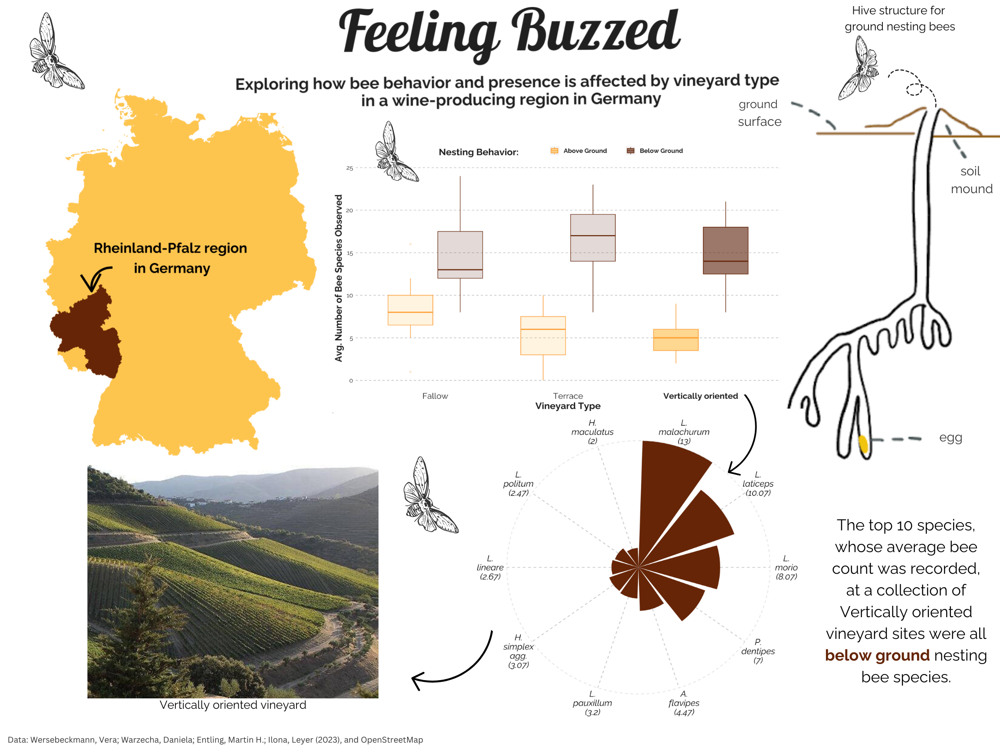

When tasked with creating a guiding question to build an infographic on to test and trial newly learned data visualization skills, I initially came up blank. Out of all the topics I find interesting how was I going to narrow this down? Then one day I was reading an article by the Wine Enthusiast about my favorite topic, bees. Kathleen Willcox highlighted the important role bees play in the viticulture world and I was immediately struck with the need to know more about this topic (Willcox (n.d.)). And the best way I know how to approach questions is with data. I then was able to find work done in Germany that investigated bee nesting behavior across vineyard types. Germany with its rich and colorful viticulture history, seemed like the ideal place to help learn whether vineyard type, in this case fallow, terraced, or vertically oriented, impacts the bee species present at a vineyard, and if that causes different species to populate these vineyards. The general result is that different vineyard types can have an impact as to which species are present and can in turn impact the amount of ground nesting and above ground nesting bees present.
The Product

How did we get here?
In order to begin to create the infographic pictured above the first step was finding a data source. It turns out that researchers in Germany in 2023 were also curious about vineyard types and its impact on the presence of above-ground and below-ground wild bee species (Wersebeckmann et al. (2022)). The researchers were able to sample from April to August 2019 in a total of three sampling rounds in three vineyard types: vertically oriented, terraced, and fallow (abandoned) . At each sampling round, traps were exposed for three consecutive days per plot (18th–20th April, 28th–30th June, 23rd–26th August). Wild bees were identified to a species level. For analysis, all samples per site were pooled over the three sampling rounds. Each species was then assigned a designation of above-ground or below-ground nesting type.
Additionally, OpenStreetMap data was accessed in order to better grasp the location associated with this dataset (Open Street Map (2024)). All vineyard sites were present in the Rheinland-Pfalz region in Germany which is known as a wine-producing region in Germany. So, in order to orient myself and the future viewers of an eventual infographic the first step to tackling my questions is to create a map that highlights where the Rheinland-Pfalz region is in Germany.
Where is this study relavent to?
Code
#..........................load packages.........................library(tidyverse)library(chron)library(naniar)library(here)library(janitor)library(ggridges)library(sf)library(ggplot2)library(ggspatial)library(geomtextpath)library(scales)library(ggtext)library(stringr)library(patchwork)library(showtext)library(gghighlight)#..........................import fonts..........................# `name` is the name of the font as it appears in Google Fonts# `family` is the user-specified id that you'll use to apply a font in your ggpplotfont_add_google(name ="Lobster", family ="lobster")font_add_google(name ="Raleway", family ="raleway")#................enable {showtext} for rendering.................showtext_auto()#..........................data cleaning for map visualization.........................# read in datagermany_outline <-st_read(here::here("blog-posts", "2024-03-05-infographic-bees-wine", "data", "DEU_adm", "DEU_adm0.shp"))germany_regions <-st_read(here::here("blog-posts", "2024-03-05-infographic-bees-wine", "data", "DEU_adm", "DEU_adm1.shp"))rhine <- germany_regions |>filter(NAME_1 =="Rheinland-Pfalz")#..........................data cleaning for boxplot visualization.........................# use read_csv2() for files with a separator of ;bees <-read_csv2(here::here("blog-posts", "2024-03-05-infographic-bees-wine", "data", "doi_10_5061_dryad_h44j0zpq0__v20221222", "Wersebeckmann_et_al_wildbee_species_matrix_allSR.csv"))bees_clean <- bees |># apply lower snake case to all column namesclean_names() |># coerce data type of site from character to factormutate(vineyard_type =as.factor(vineyard_type)) |># select only columns of interestselect(vineyard_type, ground_nesting_spec_nr, above_ground_spec_nr, spec_nr) |># turn nesting behavior and counts from 2 separate columns to a variable pivot_longer(cols =c(ground_nesting_spec_nr, above_ground_spec_nr), names_to ="nesting_behavior", values_to ="count") |># group by recorded nesting behavior for easier summarizationgroup_by(nesting_behavior)#..........................data cleaning for circular visualizations.........................bee_names <-read_csv2(here::here("blog-posts", "2024-03-05-infographic-bees-wine", "data", "doi_10_5061_dryad_h44j0zpq0__v20221222", "Wersebeckmann_et_al_wildbee_all_species_abbreviation.csv"))bees_species <- bees |># coerce data type of site from character to factormutate(VineyardType =as.factor(VineyardType)) |>select(-c(SamplingRound, Block, Winegrower, SpecNr, Ind, GroundNestingSpecNr, GroundNestingInd, AboveGroundSpecNr, AboveGroundInd, RlSpecNr, RlInd)) |>pivot_longer(!c(Site_ID, VineyardType), names_to ="Abbreviation", values_to ="counts") |>group_by(VineyardType, Abbreviation) |>summarize(mean_count =mean(counts)) |>top_n(10, mean_count)bees_species_names <-left_join(bees_species, bee_names, by ="Abbreviation") |>clean_names()#..........................create vertically oriented subset.........................vo <- bees_species_names |>filter(vineyard_type =="Vertically oriented") |>mutate(mean_count =round(mean_count, 2)) |>separate_wider_delim(full_name, delim =" ",names =c("first", "second"), too_many ="merge") |>mutate(first =paste0(str_sub(first, 1, 1), ".")) |>unite(abb_full, c(first, second), sep =" ")#........................create map of germany with region highlighted.......................germany_map <-ggplot() +geom_sf(data = germany_outline, color ="#fec44f", fill ="#fec44f") +geom_sf(data = rhine, color ="#662506", fill ="#662506") +labs(title ='Feeling Buzzed',subtitle ="Exploring how bee behavior and presence is affected by vineyard type \n in a wine-producing region in Germany" ) +# Customize general themetheme(# Set default color and font family for the texttext =element_text(family ="raleway", color ="gray12"),# Make the background white and remove extra grid linespanel.background =element_rect(fill ="white", color ="white"),panel.grid =element_blank(),panel.grid.major.x =element_blank(),# Remove axis ticks and textaxis.title =element_blank(),axis.ticks =element_blank(),axis.text.y =element_blank(),axis.text.x =element_blank(),# customize the text in the title and subtitleplot.title =element_text(family ="lobster", face ="bold",size =50, hjust =0.5, color ="gray12"),plot.subtitle =element_text(family ="raleway", face ="bold",size =14, hjust =0.5, color ="gray12"),# Move the legend to the bottomlegend.position ="left",legend.background =element_blank() ) +# add arrow and text to indicate region of Germanyannotate("curve",x =8.2, xend =7.5,y =51.3, yend =50.8,colour ="black", linewidth=1, alpha=1,arrow=arrow()) +annotate('text',x =10.2, y =51.5,label ='Rheinland-Pfalz region \nin Germany',fontface ='bold',size =4.5,family ="raleway" )
My goal for creating a map of the Rheinland-Pfalz region of Germany was to create an obvious way to show the size and location of this region in relation to the rest of Germany. I removed all axis labels and coordinate descriptions since my goal was to singularly orient within Germany. Additionally, I wanted to ensure that the color scheme of this map was able to be tied back to the main theme of this infographic, bees. Therefore the color scheme is done to remind the viewer of honey and soil with a custom hex color combination of a golden yellow and dark brown. Additionally, the colors were chosen specifically to be color-blind friendly and accessible. Furthermore, I wanted the text on this plot and the following plots to be warm, and inviting, instead of the base text I used google fonts Losbter and Raleway because of their less formal structure, and playful combination, while still prioritizing readability. As this map is set to be at the top of my visualization a title and subtitle were included to help orient the viewer as to the main topic of the infographic. Additionally, I did not want the viewer to need to use a legend or secondary indicator for determining the name of the region I have highlighted. Therefore, an arrow and a text annotation with the region name were included directly on the map.
Does vineyard type affect the average amount of above-ground and below-ground bees present?
Code
#..........................create boxplot of counts per vineyard type.........................box_plot <-ggplot(bees_clean,aes(x = vineyard_type, y = count,color = nesting_behavior, fill = nesting_behavior)) +geom_boxplot(alpha =0.6) +# highlight vertically oriented vineyards and change alpha of othersgghighlight(vineyard_type =="Vertically oriented",unhighlighted_params =list(colour =NULL, fill =NULL, alpha =0.2)) +# specify custom color palettescale_color_manual(values =c("#fe9929", "#662506"),labels =c("Above Ground", "Below Ground")) +scale_fill_manual(values =c("#fec44f", "#662506"),labels =c("Above Ground", "Below Ground")) +labs(x ="Vineyard Type",y ="Avg. Number of Bee Species Observed",fill ="Nesting Behavior:",colour ="Nesting Behavior:" ) +# Customize general themetheme(# Set default color and font family for the texttext =element_text(family ="raleway", color ="gray12"),# Make the background white and remove extra grid linespanel.background =element_rect(fill ="white", color ="white"),panel.grid =element_blank(),panel.grid.major.x =element_blank(),panel.grid.major.y =element_line(color ="gray", linetype ="dashed"),# Update x-axisaxis.text.x =element_text(color ="gray12", size =16,# bold vertically oriented on the x-axisface =c('plain', 'plain', 'bold')),axis.ticks.x =element_blank(),axis.title.x =element_text(color ="gray12", size =18,face ="bold"),# Update y-axisaxis.text.y =element_text(color ="gray12", size =12),axis.title.y =element_text(color ="gray12", size =18, face ="bold"),axis.ticks.y =element_blank(),# Move the legend to the toplegend.position ="top",legend.background =element_blank(),legend.text =element_text(color ="gray12", size =12, face ="bold"),legend.title =element_text(color ="gray12", size =18, face ="bold"), )
In order to address this question I wanted to investigate the different vineyard types through boxplots in order to highlight the different distribution of data present. I started by creating an average count of bee species present differentiated by a nesting trait of above-ground or below-ground. This allows a visual comparison of the three vineyard types. I wanted to prioritize a clean background so the background of the plot and the x-axis lines were removed in order to simplify the viewing experience. I created a dashed gray line for the main y-axis lines in order to ensure viewers could make sense of the average species counts, without being a distraction from the overall plot. The main axis titles as well as all components of the legend were bolded in the custom fonts decided earlier in order to emphasize readability. Furthermore, as the vertically oriented vineyard type showed the most distinct difference in nesting traits I chose to emphasize this vineyard type by bolding the title and plot colors for this vineyard type. Due to the middle placement within the infographic I have purposefully chosen to remove all titles, and subtitles from this visualization, in order to keep the infographic less cluttered.
What are the top 10 species present at a vertically oriented vineyard type?
Code
#..........................create circular chart of species counts.........................# create labels to add to the plotvo <- vo[order(vo$mean_count, decreasing =TRUE),]data_with_labels_v <- vo |>mutate(index_v =row_number())# number of labels requirednumber_of_label_v <-nrow(data_with_labels_v)# find the angle of rotation of the labelangle_v <--180* (data_with_labels_v$index_v -0.5) /number_of_label_v # check the label alignment - right or leftdata_with_labels_v$hjust<-ifelse(angle_v <-90, 1, 0)# check the label angle data_with_labels_v$angle_v<-ifelse(angle_v <-90, angle_v +180, angle_v)# create column that includes the mean_count recorded for each speciescount_v <- vo |>distinct(breaks=abb_full, labs=paste0(abb_full, " (",mean_count,")"))# create circular bar chart plotvo_chart <-ggplot(data = vo,aes(x =reorder(abb_full, desc(mean_count)), y = mean_count,fill = nesting_trait)) +geom_bar(stat ='identity') +labs(x ="Bee Species",y ="Number of Individuals per Species Sighted",fill ="Nesting Behavior:") +# set custom fill colorsscale_fill_manual(values =c(above.ground ="#fec44f", ground.nesting ="#662506"), labels =c("Above Ground", "Below Ground")) +# customize character length before labels split lines to 5 charactersscale_x_discrete(labels =~str_wrap(as.character(count_v$labs), 5)) +# add dashed gray line surrounding figure at 13geom_hline(yintercept =13, color ="gray", linetype ="dashed", alpha =0.5) +# turn bar chart into a circular bar chart coord_polar(clip ="off") +# create gray dashed line that goes from end of bar to y-intercept linegeom_segment(aes(x =reorder(abb_full, desc(mean_count)),xend =reorder(abb_full, desc(mean_count)),yend =13, ), color ="gray", linetype ="dashed" ) +# Customize general themetheme(# Set default color and font family for the texttext =element_text(family ="raleway", color ="gray12"),# Customize the text in the title, subtitle, and captionplot.title =element_text(face ="bold", size =25, hjust =0.5),plot.subtitle =element_text(size =14, hjust =0.05),plot.caption =element_text(size =10, hjust = .5),# Make the background white and remove extra grid linespanel.background =element_rect(fill ="white", color ="white"),panel.grid =element_blank(),panel.grid.major.x =element_blank(),# Remove axis ticks and text from y-axisaxis.text.y =element_blank(),axis.title =element_blank(),axis.ticks =element_blank(),# Use black italic text for the species namesaxis.text.x =element_text(color ="black", face ="italic", size =14,hjust =0.5, vjust =0),# remove legendlegend.position ="none" )
In order to zoom into one of the vineyard types I wanted to allow viewers of the infographic to see which species were the most recorded during the study for the vertically oriented vineyard type. In order to tackle this question I chose to use a circular bar chart to allow viewers to distinguish which species were the most recorded and be able to distinguish which nesting trait that bee species has. In order to best show this I used common shorthand nomenclature for species name that has the first letter of the Genus and then the name of the species with the full name italicized to follow species naming standards. Additionally, a label was added next to the figure in the infographic which indicated that all species were below-ground nesting bees which created the opportunity to remove the legend for simplicity sake. Furthermore, due to the positioning within the infographic a title was unnecessary as there are arrows to indicate that the vertically oriented vineyard type is being visualized.
Overall Elements
In order to improve the overall understandability of my infographic I added some overall elements. Some of these elements included bee graphics, a drawing that depicts what below-ground bee hives and nesting habitats look like as well as an image of a vertically oriented vineyard Taylor’s Port (n.d.). Additionally, a data description was included as well.
References
Open Street Map. 2024. “Germany.”
Taylor’s Port. n.d. “Vineyard Landscaping in the Douro Valley, Portugal - Taylor’s Port.”
Wersebeckmann, Vera, Daniela Warzecha, Martin H. Entling, and Leyer Ilona. 2022. “Contrasting Effects of Vineyard Type, Soil and Landscape Factors on Ground- Versus Above-Ground Nesting Bees.” Dryad. https://doi.org/10.5061/DRYAD.H44J0ZPQ0.